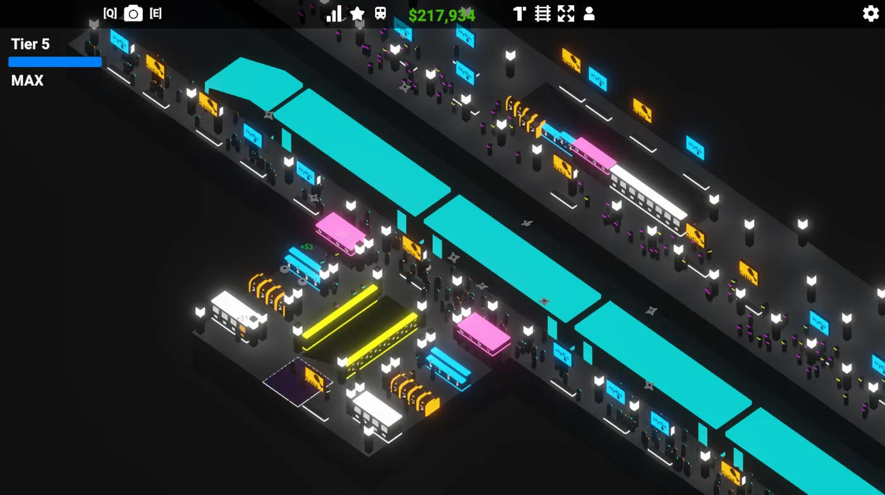
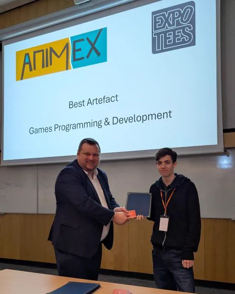

Some news: I've joined the board at Shiverbug Studios as Technical Director! 🌊 I walked in on 13 July as a gameplay programming intern, hired to write the character and enemy code for Out of Water. Week one was Develop:Brighton. Over the ten weeks I also got the opportunity to look after the build: the git workflow, pull request reviews and a tagged playtest build every fortnight. The new role covers the technical side of Out of Water, the plan for the vertical slice we're building, and making sure our artists and designers can work in Unity and git without waiting on me. Out of Water is our original IP, a two-player co-op 3D platformer, and the aim is still to bring family gaming night back to the sofa. That screenshot is all the team's work. We've got a brilliant group of artists and designers, and getting to build this game with them is the best part of the job. I'm doing it alongside my MA in Games Design at Teesside. Thanks to Lewis Mennim and Ryan Hughes for trusting me with this role ❤️
Read on LinkedIn
Cyber Station
A neon station management game about building a transport hub that can take the pressure. 86 scripts and around 17,000 lines, on my own.
Hundreds of passengers run off one fixed 10 Hz tick, and each picks a facility by lowest estimated total delay: queue wait plus real NavMesh walk time, both in seconds.
